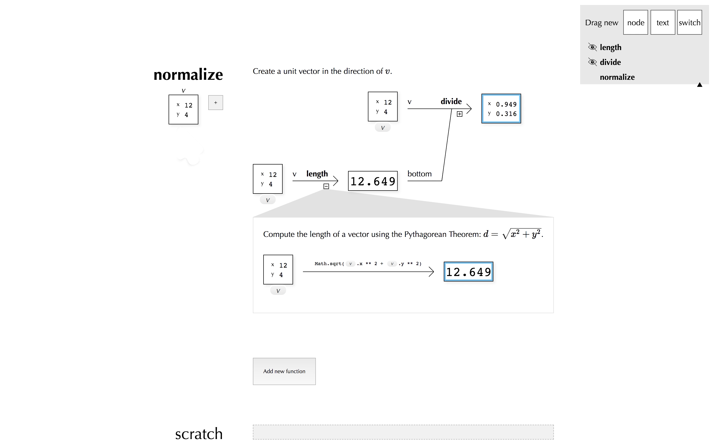
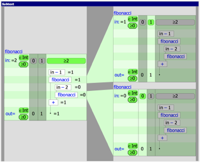
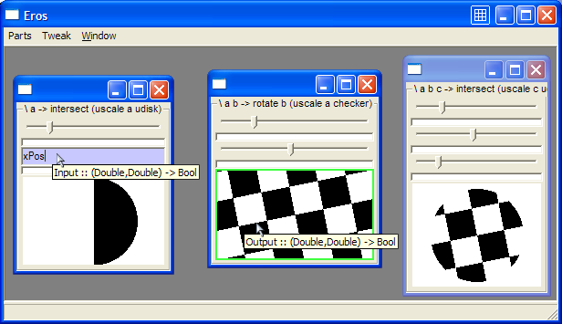
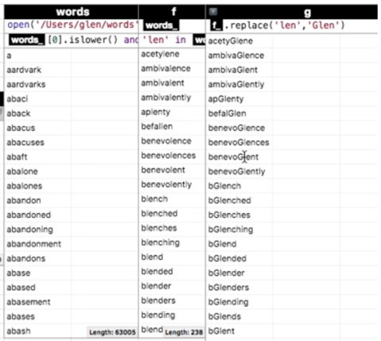
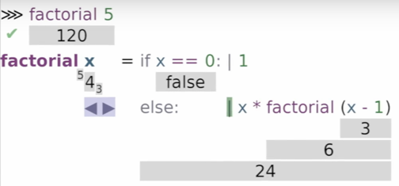
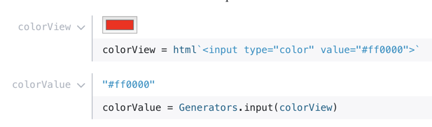
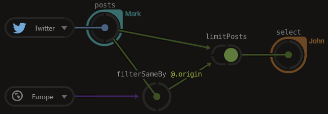

PANE is a live, functional programming environment built around data-visibility. In PANE, all intermediate values are visible by default, and you construct a program by acting on these concrete values.
PANE is a research prototype. It was presented at LIVE 2018. Here is a re-recording of that talk:

You can also watch a bootleg recording of the original presentation, courtesy of Steven Krouse. Slides are here. The web-essay on PANE submitted to and accepted by LIVE can be found here, but the video above is more complete and up-to-date.
Feel free to try the live demo, though you should expect bugs and warts.
A few important references to related work were left out of the presentation due to time constraints. I present them here as an addendum.
The most significant inspiration for PANE is Jonathan Edwards’ Subtext series. Subtext established the vision of data-centric live programming which this project follows. Many basic mechanisms in PANE were taken from Subtext either directly or indirectly, including:

PANE shares a real kinship with Conal Elliott's Tangible Functional Programming. Both are built off of functional foundations. And, more uniquely, both are centered around showing concrete values and using them as handles for direct construction of programs. Two important differences between the PANE and TFP:

Spreadsheets are a clear precedent for any live data project. In particular, I would like to call out Glen Chiacherri’s Flowsheets project, which explores how to give spreadsheets the power of conventional programming, while maintaining the immediacy and casualness of the good old grid. PANE aspires to this same blend of power and immediacy.

Lamdu is a Haskell-style functional language which gives live feedback about intermediate values. It is taking a different, more syntax- & type-driven, approach than PANE is. But it seems to be following similar principles and I am excited to follow its development.

PANE has invited comparison to notebooks, especially live, reactive notebooks like Observable. But so far, the visibility that Observable offers programmers has not been fine-grained enough to create the sort of experience that PANE aims for. As a simple example: the moment you take a block of code in Observable and make it into a function, or put it in a loop, its internals become completely invisible. It remains to be seen if the Observable developers will try to push past these limitations.

A final, intriguing case is Luna, a node-based language built on strongly-typed functional foundations. Its similarities to PANE are very clear, including a focus on “data-processing” and visualization, and a similar grounding principle. But it is worth noting the differences. For guidance, we can look at the two design choices that shaped PANE’s development.
It will be exciting to see how the choices made in Luna’s design work out, or evolve.

Thanks to…